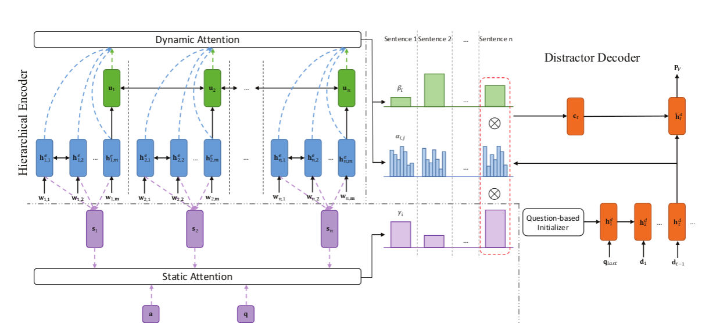

Note of Generating Distractors for Reading Comprehension Questions from Real Examination
The first paper(Generating Distractors for Reading Comprehension Questions from Real Examination) i've read.
Task Definition
In the task of automatic Distractor Generation (DG), given an article, a pair of question and its correct option originated from the article, our goal is to generate context and question related, grammatically consistent wrong options, i.e. distrac- tor, for the question.
Framework
The model use encoder-decoder framework and add a attention mechanism for optimization.

Hierarchical Encoder
input: the article
First, use a BiLSTM read all the words for each sentence. Then, use the final hidden state as the sentence representation and employ another biLSTM to read them, and will get the contextualized representation of the sentence sequence.
Static Attention Mechanism
A obvious idea is that if a sentence have close connection with the question, but have not so close connection with the answer, we can get a not trivial distractor from it.
So, we use the question and answer to give a attention weight to each sentence.
Decoder
Just a simple LSTM with teacher forcing mechanism.
Dynamic Attention Mechanism
Another idea is that if in decoder there is a hidden state which is similar to certain word's hidden state in encoder, output the certain word is a nice choice.
So we use matrix dot to calculate the similarity of two hidden state and give them different attention.